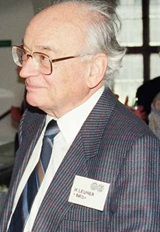

Хто ми?
СИМВОЛДРАМА (Кататимно-імагінативна психотерапія) – це один з напрямків психотерапії, що грунтуєтся на принципах глибинної психології, в якому використовується особливий метод роботи з уявою (імагінація) для того, щоб унаочнити несвідомі бажання людини, її фантазії, конфлікти і механізми захисту.
Метод розроблений відомим німецьким психотерапевтом професором Ханскарлом Льойнером (1919–1996). Появі символдрами як самостійного напрямку в психотерапії передувала тривала експериментальна робота, проведена Льойнером на базі клініки нервових хвороб Марбурзького університету в 1948-1954 рр. Висока ефективність символдрами доведена численними дослідженнями (Льойнер Х., 1996; Обухов Я.Л., 2005; Омельченко Я.М.; Боєв І.В., Обухов Я.Л., 2009; Leuner, H. 1954, 1955; Stigler M; Pokorny D., 2008, 2012; Ullmann H.; Wilke E., 2012 та ін.).

Ханскарл Льойнер
З усіх відомих на сьогодні напрямів психотерапії, які використовують роботу з уявними óбразами, символдрама є найглибше опрацьованим, системно організованим напрямком, який має фундаментальну теоретичну та експериментальну базу. Її ефективність підтверджена сучасними науковими дослідженнями, які проводилися, зокрема, в Німеччині та Австрії.
В основі методу лежать концепції класичного та сучасного психоаналізу. Метод має також багато спільного з теорією архетипів К.-Г.Юнга та розробленим ним методом активного уявляння.
Кататимно-імагінативна психотерапія застосовується при:
• неврозах та невротичних розладах особистості;
• невротичних страхах і фобіях;
• депресивних розладах;
• психосоматичних розладах;
• психотерапії межових станів (Borderline);
• вирішенні сексуальних проблем;
• допомозі в розв’язанні сімейних проблем;
• психотерапії дітей та підлітків;
• допомозі людям, що пережили горе втрати близької людини;
• супроводі і підтримці помираючих;
• роботі з екзистенційними проблемами.
Символдрама також успішно використовується в психологічному консультуванні та коучінгу. Елементи символдрами можуть бути застосовані у тренінгах особистісного зростання, а також у програмах розвитку креативності для дітей, підлітків і дорослих.
Психотерапія за методом символдрами може проводитись у формі:
• індивідуальної психотерапії;
• групової психотерапії;
• психотерапії пари (шлюбних партнерів чи дитини і когось з батьків).
Символдрама поширена в Україні, Німеччині, Австрії, Швейцарії, Чехії, Словаччині, Естонії, Литві, Латвії, Нідерландах, Швеції, Російській Федерації, Республіці Білорусь та Республіці Казахстан.
У 2014 р. в Україні – була зареєстрована незалежна громадська організація «Інститут розвитку символдрами і глибинної психології» (ІРСГП).
"80% ефективності психотерапії будь-якого напрямку забезпечується присутністю емпатіного психотерапевта, який транслює високі домінантні частоти мозку (любов, сміливість, прийняття), що долають низькі мозкові частоти клієнта (страх, образа, біль)"
Марія-Хосе Бон